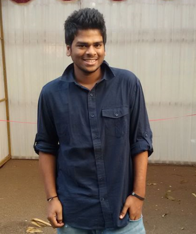

Radha Krishna Balabhadrapatruni
I am a Ph.D. Scholar at IIIT Hyderabad, where I work on Deep-Learning, Computer-Vision, and Augmented Reality. I am supervised by Prof. C.V. Jawahar. As a successful entrepreneur, the term experiment has always defined my interests in technology and management. With over four years of professional experience in product development, operations, and business formation, I seek to venture into the research aspects and produce smart products that can help in daily life.
Email: radha.krishna-at-research-dot-iiit-dot-ac-dot-in
Education:
- Pursuing Ph.D in computer science engineering at IIIT Hyderabad, Telangana.
- Bachelor of Technology in computer science engineering, GITAM University, Visakhapatnam, Andhra Pradesh.
- 12th standard in maths, physics and chemistry, Narayana junior college, Hyderabad, Telangana.
- 10th standard affiliated to C.B.S.E , D.A.V public school, Hyderabad, Telangana.
Career:
- Founder and CEO at Augmented Byte, Hyderabad, Telangana.
- Associate Software Engineer at Accenture, Hyderabad, Telangana.
Achievements:
- The project internal navigation using augmented reality has been shortlisted in the top 10 AR/VR products by TiECON Mumbai,2019, and one among the top 30 innovative products by Nasscom product conclave Hyderabad,2019.
- The internal navigation product has also been shortlisted by the Government of Telangana state incubator T-Hub.
- The internal navigation product has been selected among the top 42 products for T-Hub’s Lab-32 program, which was later acquired by Samvardhana Motherson Health Solutions Limited a subsidiary of MotherSumi Systems Limited.
Techinical Skills:
- Advanced C and C++ Programming with data structures and algorithms.
- Object-oriented programming with C++ and Python
- Advanced augmented reality programming with arcore, arkit sdks.
- Advanced game design and programming with unity3d and game maker studio.